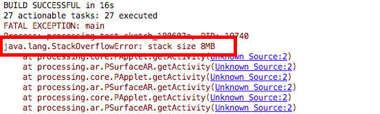
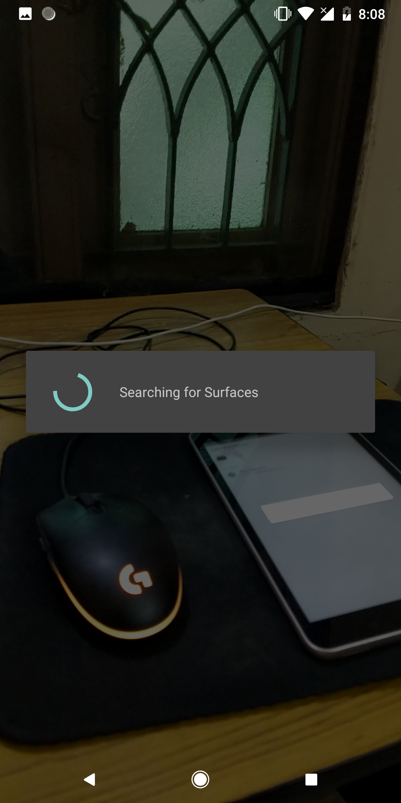
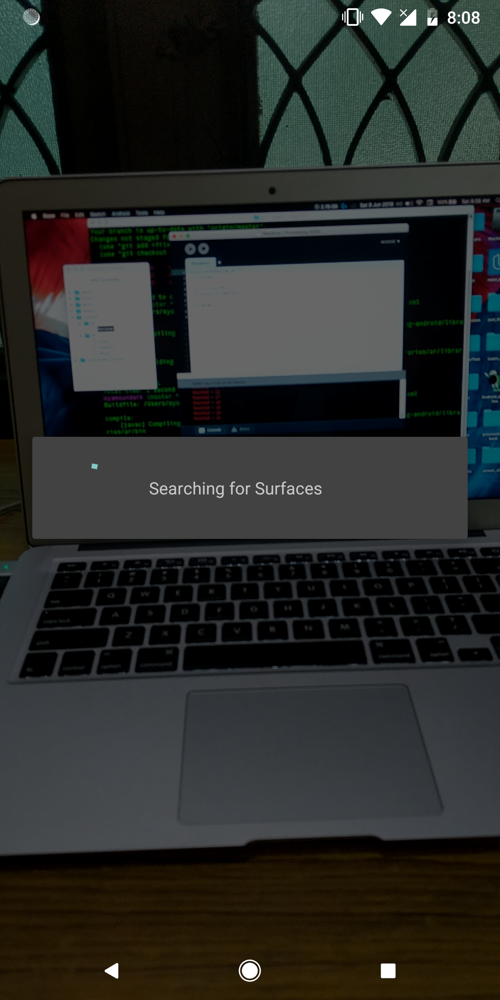

Contributions Week-III
Hello World.!
This is my weekly report 3 on the AR Library for Processing-Android which is a Library that will help creating Augmented Reality applications in Processing through Android Mode.
Implementation of the AR renderer that relays on the background sub-renderer to perform the background rendering and to obtain the real-time camera image in blocking mode was done. Now the example includes a simple sketch that initializes the AR renderer and running it gives the actual camera image in real-time over which the virtual objects will be renderer.
There were a number of challenges that I faced during the implementation of this renderer, infact - I ran into about a dozen bugs out of which few were new to me most of them while working with openGLES part and as it's java I encountered null object reference quite often on the surfaceViews. Some were fixed quite easily and some needed skills to fix - however, at the end of the day all the bugs and run-time exceptions were removed and the renderer was made consistent. To make sure that the control flow was as expected I used a log statement that reads "Reach - number" to ensure proper call-backs are call at right time sinces there call-backs are the onces that maintain the performance if not killed it shall lead to poor utilization of resources.
The following images shows the implementations in the chronological order:
- Accessing the AR Renderer.
- Accessing the initilaised Surface View.
- Accessing the Renderer with SurfaceView.Renderer.
(a) The Camera image obtained by continuous mode will be more precise in tracking of virtual objects over the real-world but at the cost of speed and performance. Initially, I tried to implement the renderer by making it work under the continuous rendering mode but as expected we ran out of stacks.
(b) The shaders are needed to implement the renderers which was placed within the src dorectory and obtained using IO methods using Relative URLs from PWD.

Working:
Youtube Link : https://www.youtube.com/watch?v=vbjOnEHlrfE
(Sorry for the quality, kindly keep the resolution atleast at 480p)
The AR Renderer now successfully gets the real-time camera image over which the Renderering of virtual objects can be done. For now the activity shows a Progress Dialogue which says "Searching for Surfaces" this Dialogue will be dismissed by the Plane renderer after it has be implemented, whose function is to detect planes in the obtained image.
 
Github Link : https://github.com/SyamSundarKirubakaran/processing-ar